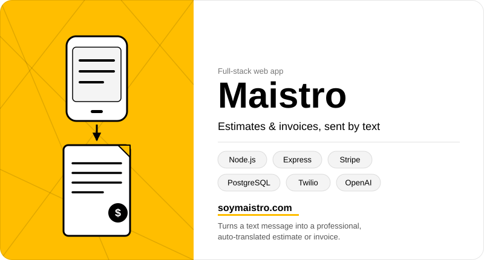

- Context
- For independent contractors and service businesses, finishing the work is often faster than doing the paperwork behind it. Job details start as texts, rough notes or conversations — not structured documents.
- Problem
- Turning that information into a professional estimate or invoice requires additional time, formatting and repetitive data entry — work that competes with the next job.
- Insight
- The job description already exists, in a text message or a few rough lines. The estimate should be generated from that, not rebuilt from scratch.
- Product
- An AI-powered workflow that converts a plain-language description of a job into a structured estimate or invoice — organized into line items, descriptions and pricing, ready for the user to review and send.
- System
- Stripe supports payment collection, Twilio connects customer messaging and Mailchimp enables email communication and follow-up — extending the product beyond document generation into a connected customer workflow.
- Outcome
- Reduced the distance between describing a job and getting paid. A contractor can move from an informal text to a professional business document in one streamlined process, without switching between disconnected tools.
